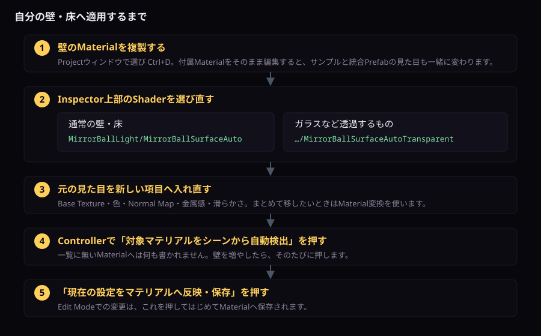

はじめて置く
自分の壁・床へ適用する
使うShaderを選び、Materialを割り当てて、Controllerへ登録するまでです。
自分の壁へ適用する
- 対象壁のMaterialを複製します。
- 通常の壁なら
MirrorBallLight/MirrorBallSurfaceAuto、ガラスならMirrorBallLight/MirrorBallSurfaceAutoTransparentへ変更します。 - 元のBase Texture、Color、Normal Mapなどを移します。
- Controllerの「対象マテリアルをシーンから自動検出」を押します。
- 「現在の設定をマテリアルへ反映・保存」を押します。

付属Materialを直接編集すると、サンプルと統合Prefabの見た目にも共有されます。ワールド固有の調整ではMaterialを複製してください。
Shader一覧
| 用途 | Shader名 |
|---|---|
| 通常面 |
MirrorBallLight/MirrorBallSurfaceAuto
|
| 透明面 |
MirrorBallLight/MirrorBallSurfaceAutoTransparent
|
| 通常版本体 |
MirrorBallLight/MirrorBallFacetBody
|
| 連携通常面 |
MirrorBallLight/Integrations/MirrorBallSurfaceAuto (VRCLightVolumes + LTCGI)
|
| 連携透明面 |
MirrorBallLight/Integrations/MirrorBallSurfaceAutoTransparent (VRCLightVolumes + LTCGI)
|
| 連携本体 |
MirrorBallLight/Integrations/MirrorBallFacetBody (VRCLightVolumes + LTCGI)
|
MaterialのInspectorの使い方
MirrorBallLightのSurface Shaderを割り当てたMaterialは、項目が11個の折りたたみに分かれて表示されます。 Unity標準のMaterial表示とは並びが違います。
Shaderを割り当てる
- ProjectウィンドウでMaterialを選びます。1つのMaterialを複数のRendererで共有していると、直した見た目はその全部に反映されます。 片方だけ変えたいなら、先に複製して割り当て直してください。付属Materialをそのまま編集するのも避けてください。 サンプルと統合Prefabの見た目も一緒に変わります。
Ctrl+Dで複製してから使います。 - Inspector上部の Shader のドロップダウンを開きます。
- 通常の壁・床なら
MirrorBallLight/MirrorBallSurfaceAuto、ガラスなど透過するものならMirrorBallLight/MirrorBallSurfaceAutoTransparentを選びます。 - 元のTexture・色・Normal Mapを、新しい項目へ入れ直します。既存Materialからまとめて移したい場合はMaterial変換を使います。
11個の折りたたみ
上にある「すべて開く」「すべて閉じる」でまとめて操作できます。
| 番号 | 中身 |
|---|---|
| 1 | 表面の基本設定（Texture・色・Normal Map・金属感・滑らかさ） |
| 2 | 表面Emission・AudioLink |
| 3 | ミラーボール反射光 |
| 4 | 反射光のAudioLink |
| 5 | 光点・形状・ランダム点灯 |
| 6 | Material個別マスク・発光パターン |
| 7 | 投影Cookie |
| 8 | 環境・材質への適応 |
| 9 | 透明描画 |
| 10 | VRCLightVolumes・LTCGI |
| 11 | 詳細・描画設定 |
Controllerが書き込む項目を手で変えても、次にControllerが反映したときに上書きされます。 どちらが正かは「Controller連動とMaterial直編集」を参照してください。Materialごとに決めたい設定（2番・6番など）は上書きされません。